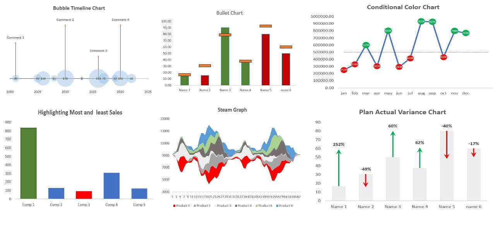
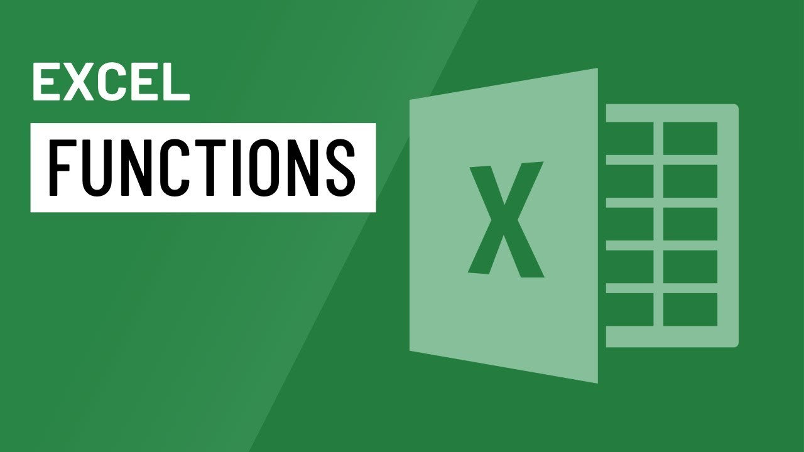
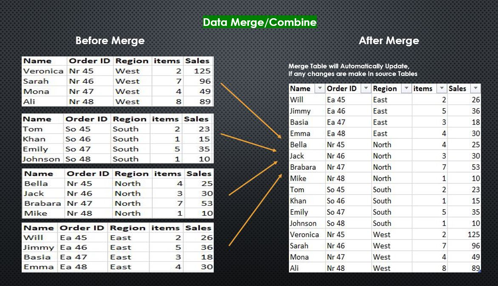

Showing advance customized Excel chart. The chart highlights key insights and trends in the data, making it easy to understand and interpret.
This shows my proficiency in Excel data visualization and ability to create visually appealing and informative charts.

In these projects, I used Excel to clean and prepare data, ensuring consistency and accuracy. I utilized various Excel functions and tools,
such as filtering and data validation, to efficiently clean the data. The project showcases my ability to work with large datasets and make them ready
for analysis. The project is available on a public repository for others to replicate the cleaning process.

These dashboards are designed to be user-friendly and visually appealing, showcasing key trends and patterns.
I used advanced Excel features such as pivot tables, slicers, and charts to create customized dashboards that meet users’
needs. It demonstrates my proficiency in Excel data visualization and my ability to create informative and visually engaging
dashboards. The project is available on a public repository for others to review and replicate the dashboard creation process and
for positive feedback.

This repo showcases my proficiency in using various Excel formulas and functions to analyze data. It includes examples of commonly used functions such as VLOOKUP,
LEFT, RIGHT, MID, POSITION, SUM, as well as data validation techniques and other functions. It demonstrates my ability to work with complex data and use
Excel to perform advanced data analysis tasks.

These projects demonstrate my proficiency in using Power Query to merge data from multiple sources efficiently. I used advanced functions like Merge, Append, and
Join to manipulate complex datasets. The merged data is cleaned and formatted for analysis.